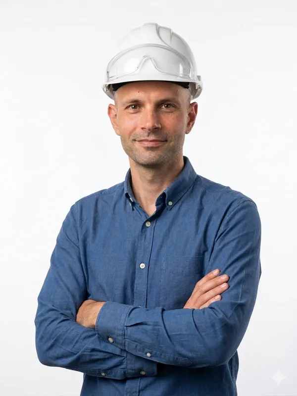

Über uns
Ingenieurbüro Kosanovic – unabhängige Fachkompetenz im konstruktiven Ingenieurbau.

M.Sc. Veljko Kosanovic
Inhaber · Bauingenieur · angehender Sachverständiger
Mit über zehn Jahren praktischer Erfahrung im konstruktiven Hoch- und Tiefbau biete ich meinen Kunden eine unabhängige, praxisnahe Beratung – von der Planung bis zur Abnahme. Meine berufliche Laufbahn führte mich von Belgrad nach München, wo ich zunächst bei der BAUWENS Construction GmbH & Co. KG und anschließend bei der Ed. Züblin AG umfangreiche Erfahrungen im Schlüsselfertigbau sowie in der Koordination und Überwachung aller am Bau beteiligten Gewerke sammeln konnte.
Mein Schwerpunkt liegt auf der Qualitätssicherung, der Terminplanung und der technischen Beratung privater und gewerblicher Auftraggeber – mit Blick auf Normen, VOB und aktuelle DIN-Regelwerke.
Kernkompetenzen
Bauleitung & Koordination
Planung, Koordination und Überwachung aller Gewerke auf der Baustelle – von der Vergabe bis zur Abnahme.
Qualitäts- & Terminsicherung
Kontrolle und Überwachung von Terminen, Kosten und Qualität. Erstellung von Terminplänen und Unterstützung der Kalkulation.
Sachverständigenwesen
Weiterbildung zum Sachverständigen für Schäden an Gebäuden (Institut für Sachverständigenwesen, ab Oktober 2026).
Konstruktiver Ingenieurbau
Fundiertes Fachwissen aus dem Masterstudium – Tragwerksplanung, Stahlkonstruktionen und mehrgeschossige Bauwerke.
Schlüsselfertigbau
Mehrjährige Erfahrung in der Begleitung von Großprojekten im Schlüsselfertigbau.
Normen & Regelwerke
Sichere Anwendung der VOB, DIN-Normen sowie baurechtlicher Vorschriften.
Berufserfahrung
Bauleitung
Begleitung von Großprojekten in der Abnahme- und Akquisephase. Koordination technischer Nachweise, Schnittstellenmanagement mit Planungsbüros.
Bauleitung · Schlüsselfertigbau
Gesamtheitliche Begleitung des Bauprozesses von der Vergabe bis zur Abnahme. Koordination aller am Bau beteiligten Gewerke.
Bauleitung
Bauleitung und Koordination von Hochbauprojekten.
Bauleitung
Erste praktische Erfahrungen: Planung und Bauleitung verschiedener Projekte, Koordination von Terminen, Kosten und Qualität.
Ausbildung & Weiterbildung
Sachverständiger für Schäden an Gebäuden
Fachspezifische Weiterbildung zur Begutachtung und Bewertung von Bauschäden.
Master of Science – Konstruktiver Ingenieurbau
Abschluss mit GPA 8,71 (von 5 bis 10).
Bachelor of Science – Konstruktiver Ingenieurbau
Abschluss mit GPA 8,84 (von 5 bis 10).